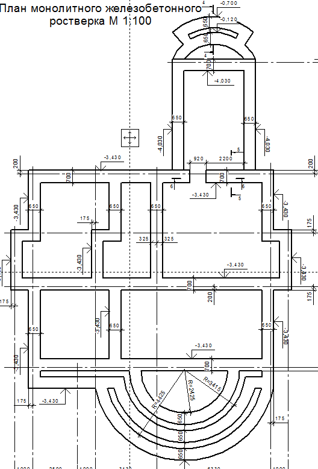

<!DOCTYPE html>
<html lang="ru">

</html>

<head>
    <title>Архив проектной документациина_page-7</title>
    <meta name="viewport" content="width=device-width, inital-scale-1.0" />
    <meta http-equiv="Content-Type" content="text/html" ; charset="utf-8" />
    <meta name=" description content=" Урок web программирования " />
                <meta name=" keywords " content=" web-страница,уроки, html " />
                <style type=" text/css "></style>
                <!--Style3 для 22-7-->
                <link rel=" stylesheet " href=" stylePr_1-3.css " type=" text/css ">

</head>
<body>
    <div class=" dv0 ">
        <div class=" dv1-1 ">
           <div class=" dv1 "></div>
            <div class=" dv2 "><h2><font color=red >Архив проектной документации на строительство (реконструкцию, капремонт) гражданских и производственных объектов, включая дома, коттеджи, линейные -
            инженерные сети и автомобильные дороги.</font></h2></div>
        </div>
        <div class=" dv3_2 ">
            <div class=" dv3-15 "><a href="SAV22-7K.html"></a>
                      <!--<div class=" dv3-15-1 ">151</div>-->
                      <!--<div class=" dv3-15-2 ">152</div>-->
            </div>
       
                    <!--<div class=" dv4 "></div>-->
             <div class=" dv5 "><p>
                       
            В архиве представлены проекты на строительство
                       
                        (реконструкцию, капремонт) гражданских, и производственных объектов, 
                        включая дома, линейные - инженерные сети и автомобильные дороги. В архиве имеются проекты на строительство двухэтажных коттеджей. Также здесь представлены проекты на капитальный ремонт лечебных, дошкольных учреждений и учреждений культуры, а также
                        справочная и нормативная документация, образцы писем и документов общим объемом более 50 Гбайт. </br> 
                        Представленные материалы могут быть полезны проектировщикам, строителям и студентам, а также всем заинтересованным лицам.Архивные материалы могут быть использованы в качестве аналогов при разработке проектов на строительство, проектов организации строительства и дипломных проектов. </font></p>
                      <p><font color="red" size="4">АРХИВ_ПРОЕКТНАЯ ДОКУМЕНТАЦИЯ_ПРОЧЕЕ1_(2-й уровень)</font></p>
                      <p><font color="red" size="4">Аннотация проекта коттеджа (продолжение)</font></p>
                        
                      <center></center>></div>
        </div>
        <!--<div style=" clear: both "> </div>-->
        
        <div class=" dv6 "><form>
                 <input type="button" value="МЕНЮ" class="button" onclick="javascript:window.location='index.html'"/>
                 <input type="button" value="СЛЕД." class="button" onclick="javascript:window.location='SAV22-8.html'"/>
                 <script>
                (function ($) {
                    $(window).load(function () {

                        $(" body ").mCustomScrollbar({
                            theme: " dark-thin "
                        });
                    });
                })(jQuery);
            </script>  
        
</form>
    
        </div>

    </body>

    </html>